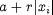
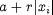
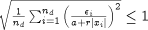
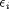
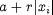

incurred in a particular variable xi over a single time step is not allowed to exceed
. The default values for a and r (10-5 in both cases) are
usually adequate since:
incurred in a particular variable xi over a single time step is not allowed to exceed
. The default values for a and r (10-5 in both cases) are
usually adequate since:There are two standard mathematical solvers for the solution of mixed sets of differential and algebraic equations in gPROMS, namely DASOLV and SRADAU:
DASOLV is based on variable time step/variable order Backward Differentiation Formulae (BDF). This has been proved to be efficient for a wide range of problems. However, BDF solvers suffer from loss of stability for certain types of problems (e.g. highly oscillatory ones) and they are not very efficient for problems with frequent discontinuities.
SRADAU implements a variable time step, fully-implicit Runge-Kutta method. It has been proved to be efficient for the solution of problems arising from the discretisation of PDAEs with strongly advective terms (in general, highly oscillatory ODEs), and models with frequent discontinuities.
Both of the above solvers are designed to deal with large, sparse systems of equations in which the variable values are restricted to lie within specified lower and upper bounds. Moreover, they can handle situations in which some of the partial derivatives of the equations with respect to the variables are available analytically while the rest have to approximated1In gPROMS models, almost all partial derivatives are computed analytically from expressions derived using symbolic manipulations. The main exception is partial derivatives of equations involving any Foreign Object methods that are not capable of returning partial derivatives.. Efficient finite difference approximations are used for the latter purpose. Both solvers automatically adjust each time step taken so that the following criterion is satisfied:

where:
nd is the number of differential variables in the problem (i.e. those that appear as
$x in the gPROMS model);
 is the solver's estimate for the local error in the ith differential variable;
xi is the current value the ith differential variable;
a is an absolute error tolerance;
r is a relative error tolerance.
In rough terms, this means that the error incurred in a particular variable xi over a single time step is not allowed to exceed
. The default values for a and r (10-5 in both cases) are
usually adequate since:
they control the error in variables xi of size 0.01 or higher to within acceptable ranges;
smaller variable values are often not important from an engineering point of view2For example, a liquid level in a processing vessel of 10-4m is practically indistinguishable from one of 10-5m..
However, for problems in which small variable values may have an important effect on system behaviour, it is advisable to specify a smaller absolute tolerance3For example, in a problem involving free radicals or ions, it may be important to distinguish between mole fraction of 10-6 and 10-7..
At the end of each simulation, if an estimate of the error committed in any variable at any time step exceeds a threshold, this is reported. See the Large residual warnings section for details.
The DASolver solution parameter may be used to change and/or configure the solver used for simulation activities, as well as the default DAE sub-solver used by all higher-level solvers. If this parameter is not specified, then the DASOLV solver is used, with the default configuration shown at the start of the section below.